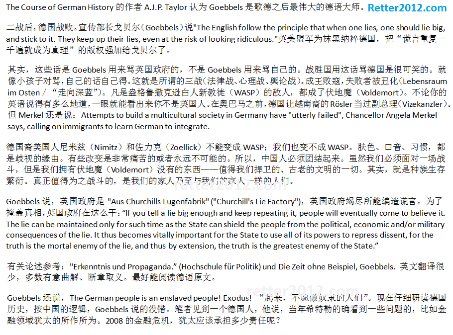

返回主页
德国秘史

德国只是想崛起而以。基于Malthus和Anthropology，Ratzel提出“国家有机体”及“生存空间”概念。Ratzel将国家比拟做具有生命的有机体，如同生物一样，需要一定的“生存空间”。英德两个日耳曼国家两次通过武力争夺世界霸权，两次都是德国惨败。
Without war, inferior or decaying races would easily choke the growth of healthy budding elements." The quest for Lebensraum was more than just an attempt to resolve potential demographic problems: it was a necessary means of defending the German race against stagnation and degeneration
参考：
日耳曼人大迁徙
1870年的普鲁士（Prussia）地图
俾斯麦（Bismarck）
季风亚洲（Monsoon Asia）
version:1.0; jobnet@188.com © retter2012.com